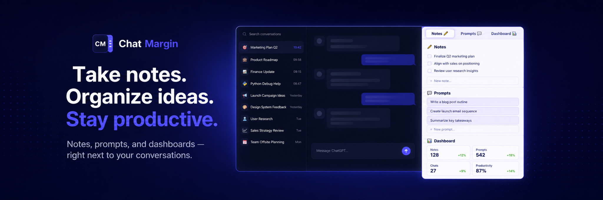

✏️
Notes per conversation
Capture context, decisions, loose ideas and next steps directly next to the conversation where they belong.
ChatMargin adds a lightweight sidebar to ChatGPT for local notes, prompt drafts and follow-ups. Stop losing track of where you were, what remains to do, and which conversations matter. The beta is free to use, with optional voluntary contributions for people who want to support ongoing development.
Official website: chatmargin.app. Independent tool. Not affiliated with OpenAI or ChatGPT. Currently free while we improve it with early users.

ChatMargin is a browser extension for people who use ChatGPT across long, complex or unfinished conversations.
ChatMargin is for people who use ChatGPT as a serious work surface: consultants, builders, researchers, founders, writers and AI-heavy teams.
Capture context, decisions, loose ideas and next steps directly next to the conversation where they belong.
Prepare prompts before sending them. Dictate, copy, and keep a simple record of what you already used.
Mark conversations as unfinished and return to them later from a local dashboard.
ChatMargin is designed to be useful without accounts, servers or hidden data collection.
ChatMargin is currently a free beta. If it helps you work better with ChatGPT, you can make an optional voluntary contribution to support ongoing development. This is a voluntary creator contribution and it does not unlock paid features in the beta.
Bug fixes, better export, richer dashboards, cross-LLM support, smarter summaries and future pro features for heavy users.